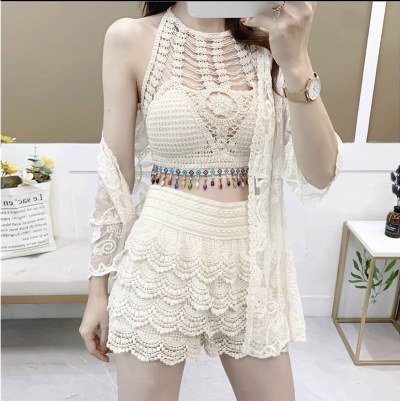

Chớp mắt đã đến thứ 6 .Thằng Dũng đang chuẩn bị đồ đi tắm biển với mẹ . Theo lịch thì nó với mẹ sẽ đi 2 ngày 1 đêm ở Nha trang . Nó đang bí trong chuyện tình cơ hội để làm tình với mẹ lần nữa . Lần trước sau khi kết thúc đêm cháy bỏng . Mẹ đã lên tiếng cảnh báo nó trong vòng 1 tháng ko được làm gì . Trong suốt thời gian đó nó luôn nghĩ và tìm cơ hội . Nhưng ko tài nào suy nghĩ ra cách nào . Nào đùng cái cơ hội đến . Hắn nắm bắt luôn cơ hội này . Nhưng thời gian khá ít . Nói chính xác hắn chỉ có một đêm duy nhất , để làm chuyện đó . Mà tình hình , hoàn cảnh , thời gian … nó ko hề có tý thông tin nào . Để có thể lên kế hoạch tỉ mỉ . Giờ hắn chỉ biết xem số trời và tuỳ cơ ứng biến …
Sắp xếp xong đồ đạc , thì nó về giường làm giấc ngay lập
tức . Vì theo lịch sáng mai 3 giờ sáng hắn với mẹ đã phải đến đài để đi . Sau một giấc nó tỉnh trước đồng hồ báo thức . Một lúc sau đồng hồ mới kêu , hắn xuống gọi mẹ . Rồi hai mẹ con gọi taxi đi đến đài . Đến đài mẹ dẫn hắn đi chào các cô các chú trong đài . Hắn cũng biết một vài người trong đó . Vì thi thoảng cũng đến nhà hắn chơi được mẹ giới thiệu . Sau màn chào hỏi , làm quen thì đến giai đoạn di chuyển .
Đến nơi thì cũng hơn 11 giờ . Mọi người tìm quán ăn trước . Ăn uống xong xuôi rồi mới về khách sạn nhận phòng . Trong lúc ăn uống mọi người miệng khen hắn cao , đẹp trai , học giỏi … lấy vợ được rồi . Hắn chỉ biết ngại ngùng , né tránh những ánh mắt nhìn hắn trêu ghẹo . Rồi có người đòi giới thiệu cả con gái cho hắn làm quen các kiểu . Nhưng đầu óc hắn giờ chỉ có một người phụ nữ duy nhất là “ Mẹ “ . Hắn phớt lờ tất cả lời đề nghị bằng cách e thẹn và ngại ngùng …
Vào đến khách sạn nhận phòng . Một điều làm hắn mững rỡ khi vừa đến , là được một bác đưa thẻ nhận phòng cho mẹ . Là phòng này là phòng của hai mẹ con . Hắn với mẹ sẽ ngủ chung phòng . Một điều kiện vô cùng thuận lợi cho việc lên kế hoạch tiếp theo .
Lan thì cũng hơi bất ngờ khi nghe sếp , sắp xếp phòng riêng cho hai mẹ con . Nàng cứ nghĩ nàng sẽ ở chung với hội chị em đi một mình . Còn thằng Dũng ở với các anh các chú đi một mình . Nhưng nhìn xung quanh thì khá bình thường . Tại những ai đăng ký đi với gia đình . Là đều được sắp phòng riêng cho gia đình . Chỉ những người độc thân hoặc đi một mình mới ghép phòng với nhau . Nàng cũng ko dám lên tiếng xin đổi vì đó là điều bình thường . Chứ ai có thể nghĩ đến chuyện nàng với con trai giờ ko khác tình nhân là mấy . Nàng chỉ biết nhận chìa khoá rồi cùng thằng Dũng lên phòng .
Lên đến phòng làm thằng Dũng càng thêm vui mừng . Vừa đi vào trong thứ đập mắt hắn là . Phòng tắm lộ thiên giữa phòng cạnh giường ngủ . Phòng được vây kín bằng những tắm kính mờ . Nhưng người ở bên ngoài vẫn có thể thấy người bên trong mờ ảo làm gì . Nhất là lúc tắm … ! Rồi lại là 1 giường , chứ ko phải hai giường . Lòng nó mững rỡ , tim nó đập thình thịnh như muốn nhảy ra ngoài để nhảy múa ăn mừng .
Trong sự vui mừng khôn siết của con trai . Thì Lan chỉ biết lắc đầu và khó chịu ra mặt trước cách bố trí căn phòng kiểu này . Đây là phòng tình nhân điển hình ở các khách sạch khu du
lịch . Đa phần các khách sạn phòng tình nhân đều như này . Nàng cũng ko dám lên tiếng xin đổi phòng được . Nên đành ngậm ngùi chịu đựng . Nàng tin thằng Dũng cũng ko dám làm gì nàng , sau lời cảnh báo lần trước …
Sau khi sắp xếp đồ đạc xong . Hắn bị mẹ bảo thay quần áo rồi bị đuổi ra ngoài . Hắn thay bộ quần short , áo phông mỏng màu xanh dương nhạt . Vì mọi người hẹn lên đồ 4 giờ sẽ ra biển tắm và chụp ảnh lưu niệm . Hắn ở ngoài mong đợi một màn bikini khoét sâu các kiểu … khoe trọn body nóng bỏng của mẹ . Nhưng điều ước ko thành hiện thực . Mẹ hắn mặc một bộ Cover Beach Up lưới màu trắng . Nó chỉ hở một chút ở eo và khoe đôi chân nuột và trắng của mẹ . Tuy là áo lưới dây nhưng phần ngực bị che kín hết chỉ lộ vùng vai và quai xanh mà thôi . Bên ngoài mẹ lại còn khoác một cái áo choàng lưới trắng đến đầu đùi . Tông soẹt tông với bộ đồ bên trong .
Ước muốn được thấy mẹ mặc bikini hai dây này nọ . Khoe trọn cái body chết người đã tan biết . Hắn đã ngắm trọn cơ thể mẹ từng cm trên người nên biết nó nóng bỏng , quyến rũ đến cỡ nào . Kể cả là lúc hắn chưa được ngắm đi nữa . Hắn đã vô số lần hắn thấy mẹ mặc mấy bộ legging bó sát người khi đi tập yoga . Chính vì những hình ảnh đó , nó mới ám ảnh hắn mà làm hắn suy nghĩ đến chuyện làm tình với mẹ .
Mọi người tập trung ở biển làm vài kiểu ảnh rồi tản ra . Các chị em thì đi với nhau . Còn cánh mày râu thì đi với bọn trẻ để trông chừng chúng . Hắn cũng đi theo các anh các chú . Hắn được xuống biển tắm được một lúc , thì bị mọi người hỏi han chuyện gái gú , người yêu các thứ … Hắn chỉ biết giả vờ là ko biết gì đâu . Rồi tìm thấy cơ hội trông mấy đứa em nhỏ , để tránh bị làm phiền . Hắn dẫn 3 đứa nhỏ nhất đi ra một chỗ , nghịch cát , xây lâu đài các thứ … với chúng .
Trông lúc trông chừng mấy đứa con nít . Ánh mắt hắn đảo quanh tìm một cái gì đó . Nhưng tuyệt nhiên ko thấy thứ hắn cần tìm . Đó chính là những độ bikini nóng bỏng của các thiếu nữ đang mặc . Xung quanh hắn là hàng trăm người . Nhưng lại thay đa phần các chị em gái đều mặc áo phông , quần short như hắn là nhiều . Thi thoảng có những người mặc cũng là bikini nhưng ko kiểu hai dây sexy . Mà chỉ là bộ bikini bình thường , với lại body lại … chỉ một từ “ tệ “ . Thú vui thứ nhất khi hắn nghĩ biển được ngắm chị em mặc bikini sexy như trên mạng đã ko còn . Hắn tập trung vào việc chơi cùng bọn trẻ mà ko ngó ngang ngó dọc nữa .
Mọi người tắm xong thì cũng gần 7 tối . Mọi người tản về phòng tắm rửa thay đồ . Rồi hẹn ở sảnh , nửa tiếng nữa đi ăn . Hắn đang mừng thầm , nghĩ sẽ được ngắm mẹ tắm qua tấm kính mờ ảo kia . Thì đến sảnh mẹ bảo .
_ Còn ngồi ở kia đợi mẹ tắm xong , xuống gọi rồi mới được lên . NGhe CHưa ? Giọng nói vô cùng quả quyết và rõ ràng .
_ Vâng !
Thế là một niềm vui nữa tan biến . Hắn chỉ biết ở dưới đi loanh quanh . Hết ngồi lại đứng dậy đi xung quanh sảnh khách sạn . Tầm 10 phút sau mẹ hắn xuống với chiếc váy trễ vai xanh dương nhạt . Dài hết chân , mẹ tiến lại gần hắn rồi bảo .
_ Lên tắm nhanh rồi xuống đi ăn .
Hắn gật đầu rồi cậm cụi bước đi trong nỗi niềm thất vọng …
… … …
Sau một lúc mọi người tập hợp lại đầy đủ . Tất cả bắt đầu lên xe đến nhà hàng hải sản đặt trước . Vừa vào đến nhà hàng hàng loạt các tủ kính hai bên và giữa , ngay trước cửa quán ập vào mắt mọi người . Bên trong các tủ kính đầy nước là cái loại hải sản tươi sống đang bơi . Từ tôm , cá , bề bề …vv ! Mọi người vào bàn đặt sẵn rồi chọn vị trí ngồi . Hắn khá lúng túng ko biết ngồi đâu . Mẹ hắn thì ngồi với các chị em gái . Còn hắn bơ vơ đang tìm chỗ thì một chú kéo hắn vào đám đàn ông ngồi xuống .
Trong lúc đợi món mọi người trò chuyện rôm rả . Mỗi góc một câu chuyện khác nhau . Tai phải nghe một chuyện , tai trái nghe một chuyện . Mắt lại nhìn một chuyện … rôm rả khắp quán . Không muốn nói là ầm ĩ . Hắn lạc lõng giữa rừng người ko biết nên tham gia cuộc chuyện nào . Chỉ biết ngồi im , ai hỏi thì trả lời . Chứ ko biết nói gì .
Một bàn ăn đầy đủ các loại hải sản được bưng lên . Tôm
hùm , sò , ngao , hai loại ốc hắn ko biết tên và cả đĩa cá cũng vậy . Theo sau lại là nhím biển và một món mà hắn từng thề ko bao giờ động vào lần nữa . “ Hàu “ nướng mỡ hành . Món này hồi cấp hai từng đi biển với gia đình và được thử . Vừa cho vào mồm hắn đã nôn ra vì vị tanh của nó . Nhưng lần này hắn dán chặt vào đĩa hàu vừa đặt xuống . Tại hắn biết ăn hàu sẽ bổ xung sinh lý từ trên mạng . Hắn muốn ăn hết chỗ đó để chuẩn bị cho tối nay . Nhưng ko dám vì mọi người chưa ai động đũa .
Trong lúc ăn hắn vừa quan sát xem mọi người ăn hàu như
nào . Sau một lúc quan sát hắn nhận ra hầu như mọi người chỉ ăn 1 – 2 con . Không ai động đến con thứ 3 . Hắn nhận định ra rằng , mỗi người một phần chỉ được 2 con .
Trong lúc mọi người đang trò chuyện , ko ai để ý . Hắn lén lấy một con về chỗ , cầm đũa gấp cho vào miệng . Vẫn là cái mùi tanh năm xưa . Nhưng lần này ko ráng nhịn nhai mấy cái rồi nuốt ực xuống vì lí do đặc biệt . Rồi hắn lại lấy con thứ 2 tiếp tục . Hắn vừa ăn xong , chú Quỳnh ngồi bên cạnh hỏi .
_ Cháu thích ăn hàu à ?
Hắn hơi bỡ ngỡ nhưng ngay lập tức lấy lại bình tĩnh đáp .
_ Dạ !
Vừa nói xong chú Quỳnh liền lấy một con nữa cho hắn ăn rồi nói .
_ Tốt ! Con trai phải biết ăn hàu , cái này cực kì tốt !
Hắn chỉ biết cười và gật đầu rồi lại gắp con hàu cho vào miệng .
Đến cuối bữa tiệc , mọi người đứng dậy nâng ly . Hắn cũng bị kéo đứng dậy . Rồi bị dí cốc bia vào tay .
_ 2,3 zô….2,3 zô …..2,3 uống . Hết !
Vì các chú bên cạnh bảo hắn uống . Hắn nhìn về phía mẹ ,thì thấy mẹ uống xong rồi lại quay nói chuyện với cô bên cạnh . Hắn liền một hơi nốc hết cốc bia . Lần đầu hắn uống bia , lập tức hơi ga trong bia sọc lên mũi . Mắt hắn rơm rớm ít nước vì sặc bia . Miệng thì ợ hơi hai ba cái . Một lúc sau thì hết . Rồi mọi lên xe về khách sạn nghỉ ngơi .
Vào đến phòng thì mẹ bảo hắn thay đồ rồi đi ngủ . Hắn cố tính đứng sát tấm kính để cởi đồ . Để lộ cơ thể và nhất là con cu đang cửng của hắn . Cu hắn cửng từ lúc ô tô rồi . Lúc đó hắn rất háo hứng , luôn nghĩ đến cảnh địt nhau với mẹ đêm nay . Ánh mắt hắn gần như ko rời khỏi mẹ từ lúc tan tiệc . Hắn ko biết bên ngoài mẹ có đang nhìn ko ? Nhưng là bước đầu tiên trong kế hoạch .
Thứ nhất là phơi bày cơ thể . Cụ thể là con cu của hắn để kích thích ham muốn của mẹ . Sau đó sẽ là giả nai như mọi lần . Cầu xin các kiểu và tỏ ra đáng thương . Và cuối cùng là chinh phục mẹ bằng con cu này .
Hắn mặc mỗi quần đùi ko mặc sịp và áo ba lỗ . Phía dưới đũng quần nhô lên một cục rất rõ ràng . Hắn cố tình như vậy rồi bước ra ngoài . Vừa bước ra ngoài hắn thấy cảnh tưởng làm hắn tụt gần hết cảm xúc .
Phía dưới đất ở cuối giường có một cái gối và cái chăn màu trắng . Hắn liền biết nó biểu tưởng cho điều gì . Hắn chưa kịp lên tiếng thắc mắc tại sao . Mẹ hắn đã lên tiếng trước .
_ Con ngủ ở dưới đất rõ chưa ! Tông giọng vô cùng đanh thép và rõ ràng khi ra lệnh .
_ Nhưng … Hắn định tìm cớ dưới đất lạnh này nọ , thì mẹ đã cắt ngang .
_ Không nhưng gì hết ! Mẹ biết con có ý gì khi biết được ngủ chung giường với mẹ … nàng dừng lại 2 giây , nhìn thẳng mắt nó với ánh mắt cương quyết rồi tiếp … Mẹ đã nói rồi , 1 tháng là 1 tháng . Con mà dám làm bậy thì biết hậu quả . Giờ đi ngủ đi .
Ánh mắt và giọng nói đầy uy lực của mẹ cũng làm hắn hơi
rén . Hắn giờ ko biết làm thế nào . Chắc chắn giờ ko van xin , năn nỉ được rồi . Giờ hắn chỉ biết nằm đất ôm chăn mà suy nghĩ cách khác …
Vừa vào đến phòng Lan liền bắt nó thay đồ đi ngủ ngay . Trong lúc nàng lấy ga giường và gối để xuống đất cho nó . Thì đập vào mắt nàng qua cái gương mờ ảo của phòng tắm . Là thân thể trần truồng của thằng Dũng mờ ảo bên trong . Tuy mờ nhưng vẫn có thể thấy con chim nó đang chĩa thẳng lên trời . Nàng ko biết nó cố ý hay vô tình . Nhưng nàng đã đề phòng chuyện này từ lúc vào nhận phòng . Nàng sẽ để nó ngủ dưới đất . Và đe doạ nó để nó biết sợ mà ko dám làm càn . Nó vừa bước ra đã đứng hình trước cảnh gối và ga giường dưới đất .
Nàng liền lên giọng răn đe và cảnh cáo . Trong lúc đó nàng cũng để ý ra . Phía dưới đũng quần nó hơi bất thường . Có vẻ con chim nó … Nhưng nàng ko sợ lắm . Nàng chuẩn bị trước tất cả rồi . Nàng cố tình mặc luôn cái đầm trễ vai dài đến mắt cá chân để ngủ hôm nay . Nó như một cái áo giáp để bảo vệ nàng trước con mãnh thú hoang dã kia . Nàng luôn dùng ánh mắt mình quan sát mọi cử động nó . Sau một lúc ko thấy nó cự quậy hay cố ý đồ gì . Chỉ nằm im một chỗ , nàng mới an tâm nhắm mắt đi ngủ .
Dưới đất hắn ôm chăn co ro suy nghĩ nên làm gì bây giờ . Hắn ko để ý đến thời gian đêm nay trôi đi rất nhanh . Trong lúc hắn nghĩ cách này cách nọ , làm hay ko làm … các kiểu . Thời gian đã trôi đi gần 2 tiếng đồng hồ . Hắn đã nằm dưới đất bằng đấy thời gian mà ko nghĩ ra cách gì ổn thoả . Hắn vẫn sợ lời đe doạ hậu quả . Hắn ko biết hậu quả nếu hắn làm tới thì chuyện gì xảy ra ?
Hắn ngóc đầu dậy xem tình hình trên giường . Điều ko ngờ là mẹ ngủ rồi ! Mới đây mẹ đã ngủ rồi sao ? Hắn ko ngờ mẹ ngủ nhanh vậy . Nhưng hắn quay mặt sang cái đồng hồ treo tường bên cạnh giường . Thì đã gần 12 giờ . Hắn ko nghĩ rằng thời gian trôi nhanh vậy . Hắn cứ tưởng mới nửa tiếng đổ lại . Ai ngờ gần 2 tiếng trôi qua rồi .
Hắn đứng dậy , lẩm bẩm trong đầu . “ Làm hay ko … Làm hay ko … “. Hắn chưa từng cảm nhận bị thời gian dí như này . Kể cả lúc thi cử hắn luôn nắm chắc thời gian làm bài trong tay . Lần này bị thời gian dí vào đít . Một cảm giác rất khó chịu .
“ Làm “ ! Đầu hắn quyết định phải làm tới vậy . Chứ thời gian cứ trôi như này thì chớp mắt đã sáng . Lúc đó thì ko còn cơ hội nữa . Hắn cho tay vào quần vuốt vuốt con cu cho nó cửng hết cỡ . Để lấy đó là lý do ko ngủ được , mà nài nỉ .
_ Mẹ ! Mẹ ! Vừa gọi nhỏ , vừa lay người mẹ dậy .
_ Chuyệnn gì vậy ? Một giọng hỏi đang ngái ngủ bị đánh
thức .
_ Mẹ giúp … giúp con với với ! Hắn cố tình nó lắp bắp và tỏ ra đáng thương để lấy lòng mẹ hắn .
_ Chuyện gì ? Nàng mở mắt quay sang nhìn nó và hỏi .
_ Con con ko ngủ được !
Nàng chống tay ngồi dậy nhìn nó . Lập tức hiểu ra vấn đề . Đũng quần nó dựng đứng một cục bên trong . Nàng liền đanh giọng răn đe .
_ Không được biết chưa ! Đi ngủ ngay .
_ Nhưng nãy giờ nó cứ thế . Con ko tài nào ngủ được . Hơn hai tiếng rồi nó cứ thế . Hình như do nãy bị các chú ép uống bia . Từ lúc đó đã có vẫn đề rồi . Khó chịu lắm mẹ . Đi mà mẹ ! Đi mà mẹ ! Lần này thôi ! …
Hắn nói một lèo vừa nhanh vừa rõ . Không cho mẹ cơ hội cắt ngang . Hắn lấy lí do bị ép uống bia mới vậy để thêm thuyết phục .
Nàng nghe nó nói một mạch . Xong quay sang nhìn đồng hồ bên cạnh . Đúng là hai tiếng trôi qua từ lúc nàng ngủ . Nhưng ko phải vậy mà có thể lấy đó làm lý do thuyết phục nàng .
_ Vậy tự xử đi …
_ Con làm rồi nhưng nó ko xuống ! Mới gọi mẹ ! Nó ko để nàng nói hết đã cắt ngang lời nàng .
_ Thế làm đến lúc nào xuống thì ngủ . Vào phòng tắm làm ngay . Nàng lên tiếng ra lệnh , ép nó tự thủ dâm để giải toả cho chính nó .
_ Con nói rồi ko tác dụng mà …
_ Làm đến lúc nào xuống là …
_ Con bảo rồi mà ko được … nàng vừa cắt lời nó , giờ nó lại cắt lời nàng mà nói … Do mẹ ép con đó .
Nghe câu nói nó vừa thốt ra . Nàng đã có cảm giác chuyện tồi tệ sắp xảy ra . Ngay lập tức nó như con hổ vồ . Nhảy vèo lên giường , giật văng chăn một bên . Rồi nó đè nàng xuống giường lại . Xong tay liên tục tìm cách cởi đầm nàng ra . Nàng đã đề phòng trước nên nó loay hoay . Cùng với sự vùng vẫy của nàng . Nó gần như ko thể nào cởi được cái đầm ra . Miệng nàng liên tục gọi thẳng tên nó , rồi đe doạ các kiểu . Nàng ko dám hét to vì đây là khách sạn . Với kinh nhiệm nàng , nàng biết cách âm phòng khách sạn rất tệ . Nên chỉ dám gằn giọng nói .
_ Dũng ! Bỏ mẹ ra ngay ! Muốn mẹ chết thật con mới sợ à ! Bỏ . Ra . Ngay . Không . Thì . Bảo !
Hắn ko ngờ cái váy của mẹ khó chịu đến vậy . Tay hắn lúc thì giữ mẹ , lúc thì tìm cờ hội vén , hoặc tụt nó ra . Nhưng cách nào cũng ko được . Cứ thế hắn với mẹ giằng co mấy phút đồng hồ . Mặc kệ mẹ nó nói gì , vùng vẫy kiểu gì . Ý chí hắn vẫn cương quyết phải làm tới cùng . Nhưng …
_ A ! Một tiếng hét lớn trong vô vọng của người con trai đứng giữa phòng .
Sau một lúc lâu giằng co với mẹ . Mà ko xiêm nê gì . Hắn uất đến mức từ bỏ . Đứng dậy , nhảy xuống giường hét lớn . Rồi giậm chân lên tục .
Lan cũng bất ngờ trước hành động của con trai . Nàng thấy nó hét ầm lên vậy . Sợ mọi người xung quanh để ý . Nên liền đứng dậy , nhảy xuống giường , lấy 1 tay bịp miệng nó , 1 tay ôm cổ nó . Để nó đứng yên một chỗ .
_ Con bị điên à ? Định cho mọi người biết à ? Nàng thì thầm nói khẽ vào mặt nó . Nói xong nàng giữ nguyên động tác . Ánh mắt đưa về phía cánh cửa . May mà nó cũng hợp tác đứng yên mà ko dãy dụa .
Nhìn về cánh cửa một lúc ko thấy có động tĩnh khác lạ gì . Như có người tới hỏi … hay tiếng xì xào bàn tán bên ngoài nàng mới yên tâm . Nàng mới nới lỏng tay khỏi miệng nó . Chứ ko dám bỏ hẳn xuống . Để đề phòng nó hét nàng còn kịp bịp lại . Rồi lên tiếng trách móc .
_ Con bị điên à ? Mà hét ầm lên như thế ?
_ Con khó chịu lắm … mỗi từ nó nói ra đều phả hơi ấm vào lòng tay nàng … ko phải hết cách rồi . Thì đã ko nhờ mẹ , mà mẹ …
Nói đến đây nó ko tiếp tục . Nàng nhìn nó với ánh mắt sợ sệt . Nó vừa rồi ko khác gì thú hoang . Dưới đùi nàng thì có cái gì đó cọ vào . Nàng đến lúc này cũng ko biết làm gì nữa . Từ phản ứng lời nói hay cơ thể nó đều nói hết sự khó chịu của nó rồi .

Nàng buông thõng đôi tay xuống . Đứng lùi lại một bước nhìn thẳng vào bộ mặt đáng thương của nó . Rồi ra quyết định . Nàng đưa tay ra đằng sau . Mở chốt khoá lưng kéo xuống một chút . Đó chính là mấu chốt trong việc nó làm cách nào cũng ko cởi đầm nàng . Khi khoá nới lỏng ra , nàng từ từ lấy tay kéo đầm tụt xuống . Dần dần bờ ngực nàng lộ ra , nó được bảo vệ bởi chiếc áo lót màu hồng thẫm . Đầm kéo đến hông nàng bỏ tay ra nó liền tụt nhanh xuống chân . Cùng khoảnh khắc chớp nhoáng đó là chiếc quần lót cùng bộ với áo lót cũng lộ ra . Nó có trách nhiệm cao cả hơn cả áo lót . Nó là phòng tuyến bảo vệ cuối cùng . Của nơi quý giá nhất của người phụ nữ .
Ánh mắt và bộ dạng thằng Dũng lập tức thay đổi 180 độ . Nó hứng hởi ra mặt và môi nó nở nụ cười đến mang tai . Lan từ từ bước chân ra khỏi chiếc đi về phía nó .
_ Làm nhanh rồi đi ngủ biết chưa ?
_ Dạ !
Nói xong nó liền ôm eo nàng . Nhấc nàng lên xoay về phía giường định đặt nàng xuống . Nhưng nàng nghĩ đến một chuyện . Nên liền lên tiếng ngăn cản .
_ Không được làm trên giường .
_ Sao vậy mẹ ! Nó bất ngờ liền thả nàng xuống rồi hỏi .
_ Mình thuê phòng với tư cách mẹ con . Làm ở trên giường , có dấu vết gì người ta biết ngay . Làm ở dưới đất thôi .
Nói xong nàng quay ra cái ga và gối của nó dưới đất . Cầm lên ném lên giường . Với kinh nhiệm đi nhà nghỉ với chồng . Nàng biết rõ điều này . Vì phần lớn ga với chăn gối đều trắng tinh . Không nói đến những thứ như tinh dịch hay nước nhờn khi quan hệ dính vào . Đã lưu lại dấu vết rõ ràng . Mà chỉ cần mồ hôi thôi cũng khiến chăn , ga … đã có vết ố rồi .